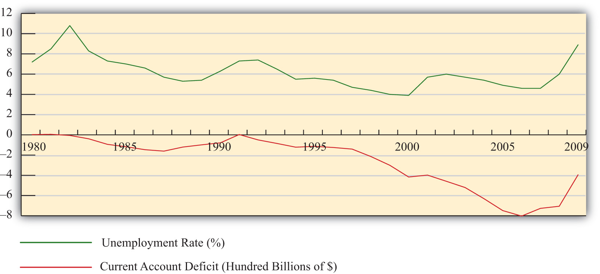

One of the main reasons trade deficits are considered deleterious is because of a common argument that trade deficits result in job losses. The rationale behind this argument is simple and convincing. There are two parts to the story that begin with the definition of a trade deficit.
First, a trade deficit arises whenever imports exceed exports. One simple reason for an imbalance of this kind is that imports are too large or at least larger than they would be under balanced trade. The most common reason offered in developed countries for why imports are too large is that low import prices arise because less-developed countries have exceedingly low wages paid to workers, lax health and safety standards, or more lenient environmental policies, all of which contribute to a veritable flood of imports.
The effect of excessive imports is said to be the purchase of cheaper foreign goods by domestic consumers rather than purchasing the slightly more expensive domestic varieties. As demand for domestic firms’ products falls, these firms are forced to downsize, resulting in the layoff of domestic workers. Thus it is said that trade deficits cause the loss of domestic jobs.
The second story argues that the reason imports exceed exports is because exports are too low; they are smaller than they should be. The most common reason given for low exports, especially in the developed countries, is the relatively high barriers to trade in developing countries. Although many countries participate in the World Trade Organization (WTO), the average applied tariffs still remain considerably higher in developing countries.
The effect of insufficient exports is that products that could be produced and sold abroad are not produced and sold abroad because of the barriers to trade. If the barriers were only removed, then exports would expand and jobs would be created in the country.
Thus since both of these stories can operate simultaneously, most observers are convinced that trade deficits indeed will cause job losses. Turn the deficit around, perhaps so much so as to induce a trade surplus, and this logic suggests that more jobs will be created.
This argument is very convincing because there is an element of truth to it. Changes in import and export patterns will certainly have competitive impacts on some industries and could produce temporary job losses. However, this doesn’t mean that a country with a trade deficit generates fewer overall jobs than a country with a trade surplus. Nor does it mean that increases in a country’s trade deficit will necessarily lead to economy-wide job losses.
One reason job losses may not occur has to do with the deceptive nature of the previous job loss stories. The stories are convincing as far as they go, but unfortunately, they don’t go far enough. In other words, the job loss stories have some validity, but they are incomplete; they don’t tell the full story, and as a result they tend to mislead.
The rest of the story (as Paul Harvey would have said) is to recognize that when trade deficits arise on the current account, there is an equal and opposite trade surplus on the financial account of the balance of payments. A financial account surplus means that foreigners are purchasing domestic assets. Some of these purchases consist of equities such as stocks and real estate, while other asset purchases involve the lending of money as when foreigners purchase a government bond. In any case, that money flows back into the deficit country and ultimately is spent by someone. That someone could be the previous holder of the real estate or it could be the domestic government. When it is spent, it creates demands for goods and services that in turn create jobs in those industries.
Now consider for a moment the following thought experiment. Suppose we could instantly change the behavior of the foreign lenders generating the financial account surplus (and the related trade deficit). Suppose they decide at once not to lend the money to the government or not to purchase real estate but instead decide to purchase domestic goods. The increase in goods purchases by foreigners would imply that export demand and hence exports will rise. Indeed, they will rise sufficiently to eliminate the trade deficit. And because of the increase in exports, jobs will be created in the export industries. However, at the same time export jobs are created, other jobs in the economy are being lost. That’s because now less money is there to purchase the real estate or to lend to the government. Thus the elimination of the trade deficit doesn’t create jobs in the aggregate, but it will change which sectors have more and less demand for its products. In other words, changes in the trade deficit will ultimately affect only where the jobs are in the economy (i.e., in which industries), not how many jobs there are.
The one exception to this, and one of the main reasons the job loss stories remain so convincing, is when there are rapid changes in the trade deficit or surplus. Rapid changes, like the thought experiment above, would require adjustments of workers between industries. During that adjustment process, some workers will be temporarily unemployed. If that adjustment involves an increase in the trade deficit or a decrease in the trade surplus, the temporary jobs effect will be very noticeable in the tradable products industries. However, if the adjustment involves a decrease in the deficit or an increase in the surplus, then the job losses will more likely occur in the nontradable products sectors and it will be difficult to connect those job losses to the changes in the trade balance.
To provide some validation of this point—that is, that changes in the trade balances do not have effects on the aggregate number of jobs in an economy—consider Figure 14.1 "U.S. Trade Deficits and Unemployment, 1980–2009", showing two U.S. macroeconomic variables plotted over the past twenty years: the current account balance and the national unemployment rate. Now if the jobs stories suggesting that trade deficits cause job losses were true, we might expect to see an inverse relationship between the trade balance and the unemployment rate. Alternatively, if an increase in a country’s trade deficit causes job losses in the economy, we might expect an increase in the unemployment rate to occur as well. Similarly, a decrease in the trade deficit should create jobs and lead to a decrease in the unemployment rate.
Figure 14.1 U.S. Trade Deficits and Unemployment, 1980–2009
Interestingly, what Figure 14.1 "U.S. Trade Deficits and Unemployment, 1980–2009" shows is that during the periods when the U.S. trade deficit is rising (i.e., the trade balance is falling), the unemployment rate is falling; whereas when the trade deficit is falling, the unemployment rate is rising. This is precisely the opposite effect one would expect if the job-loss stories of trade deficits were true.
Of course this evidence does not prove that trade deficits will reduce unemployment in every country in all circumstances. However, the evidence does suggest that it is inappropriate to jump to the popular conclusion that trade deficits are bad for jobs and thus bad for the economy.
Jeopardy Questions. As in the popular television game show, you are given an answer to a question and you must respond with the question. For example, if the answer is “a tax on imports,” then the correct question is “What is a tariff?”